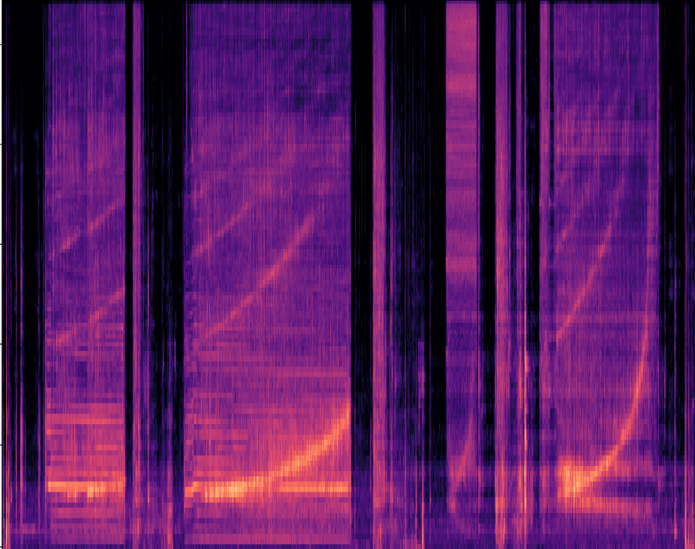

The mundane act of pouring liquid into a bottle reveals fundamental principles of sonic interaction design. This study examines a bottle being filled with water, analysing the acoustic properties through spectrographs, waveform representation and perceptual evaluation. Evidence in psychoacoustic research suggests that humans can get a sense of liquid level, time to fill, container size, and even liquid temperature merely from the sound of pouring. This study examines how, according to the Helmholtz resonance principle, pitch increases and amplitude decreases as water is filled in the container.
Author: Anant Rohmetra